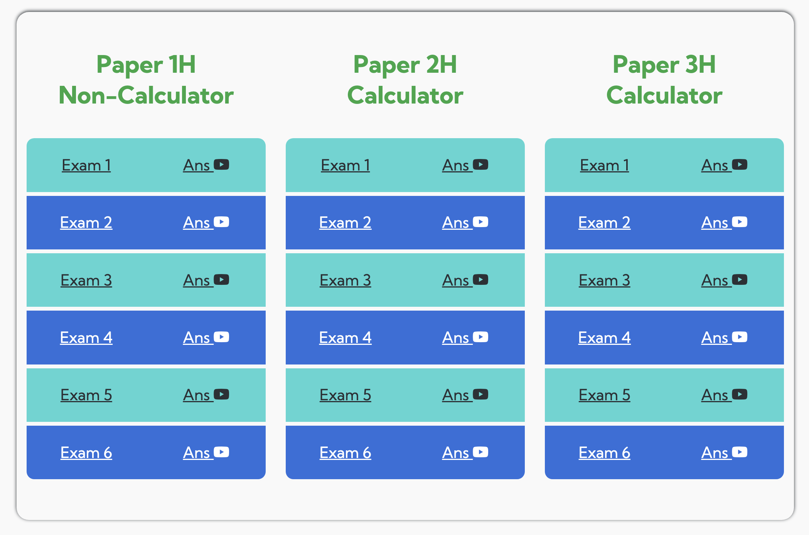

<main>
    {% assign profile_reviews = site.data.google_reviews.result %}
    <section class="article mt-2">
        <h1>{{ page.title }}</h1>

        

        <h2>Get the Resources You Need</h2>
        
        <p>Struggling with GCSE Maths? I get it.</p>
        
        <p>If you're here, you're probably looking for a way to improve in maths.</p>
        
        <p>Maybe you're stuck at a grade that isn't good enough.<br>
        Maybe you're losing confidence with every tricky question.<br>
        Or maybe you just need the right resources to push you to the next level.</p>
        
        <p>Whatever the reason, I've got something for you.</p>
        
        <h2>📖 Free Grade 4 GCSE Maths Pack 🎥</h2>
        <p>I've put together a collection of <strong>real exam questions</strong> from Edexcel GCSE Maths (Grade 4 level) - with step-by-step video solutions.</p>
        
        <p>No more guessing your way through. No more wasted time.</p>
        
        <p>With these booklets and videos, you'll know <strong>exactly</strong> how to approach the questions that matter.</p>
        
        <h2>🔓 Unlock Your Free Pack Now</h2>
        <p>Enter your email below, and I'll send everything straight to your inbox.</p>
        
        <p>🚀 <strong>Get instant access to:</strong></p>
        <ul role="list">
            <li class="font-0">✔️ 18 Edexcel GCSE Maths Grade 4 exam booklets (past paper questions)</li>
            <li class="font-0">✔️ Easy-to-follow, step-by-step video solutions</li>
            <li class="font-0">✔️ A clear, step-by-step system for tackling Grade 4 questions, boosting your confidence</li>
        </ul>
        
        <p>As a dedicated GCSE and A-Level Maths tutor, I've helped hundreds of students achieve their target grades.</p>
        <p>But don't take my word for it.</p>

        <a class="body-link capitalize font-0" href="{{ page.google-link }}">Here's what Ben had to say:</a>
        <blockquote>"Highly recommend, managed to go up 4 grades from a grade 3 to a grade 7 in less than a year! Really improved my understanding of maths  and was so helpful 😁 …"</blockquote>

        <p>And Ben isn't the only one.</p>
        <p>I've worked with hundreds of students, and the results speak for themselves:</p>
        <ul class="list">
            <li class="font-0"><i class="bi bi-check-circle-fill"></i> {{ profile_reviews.user_ratings_total }} five-star reviews on <a class="body-link capitalize" href="https://www.google.com/maps?cid=817937885209270652" target="_blank" rel="noopener noreferrer">google</a></li>
            <li class="font-0"><i class="bi bi-youtube"></i> A <a class="body-link capitalize" href="https://www.youtube.com/@GGMaths" target="_blank" rel="noopener noreferrer">YouTube channel</a> with 4,000+ subscribers and over 250,000 views</li>
            <li class="font-0"><i class="bi bi-graph-up-arrow"></i> A <a class="body-link capitalize" href="{{ page.google-link }}" target="_blank" rel="noopener noreferrer">proven track record</a> of helping students go from struggling to thriving</li>
        </ul>

        <p>This is your chance to start doing the same.</p>
        
        <!-- Mailerlite formß -->
        <div class="ml-embedded" data-form="Sd3uoK"></div>
        
    </section>
</main>